Creating a GitHub Repository
Overview¶
In this section, you will learn how to create a GitHub repository for your Python code through your Pycharm IDE. GitHub is an online hosting service that allows users save their work in repositories. This is used by many programmers in order for them to collaborate and work on the same projects together. This also assists programmers in keeping track of the past versions of their code, so whenever they need to recover a piece of code, it can easily be found in the repository.
Requirements¶
Before proceeding with the instructions, you must have the following:
- A GitHub account
- A Python project in PyCharm
Adding your GitHub Account¶
The first thing you need to do is to connect your GitHub account to PyCharm. This allows the IDE to know where to share the project to whenever you make a repository for your projects.
-
Open up the project you want to save in GitHub. 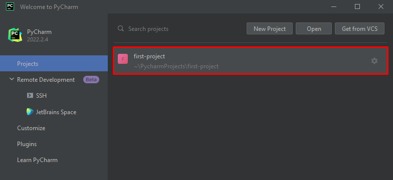
-
Open up your 'Settings' by going down to the 'File' dropdown. 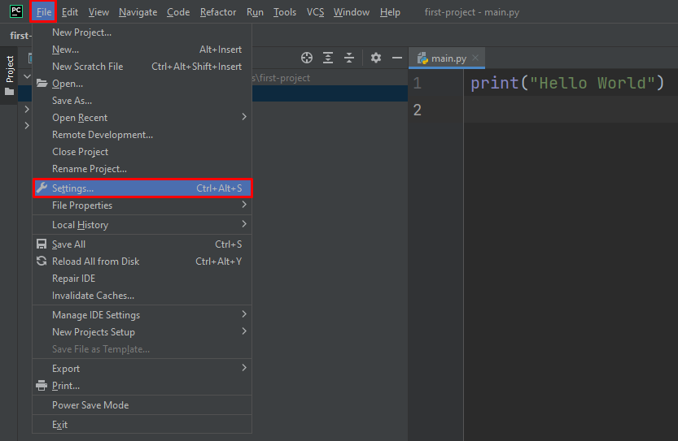
-
Click on 'GitHub' in the 'Version Control' dropdown.
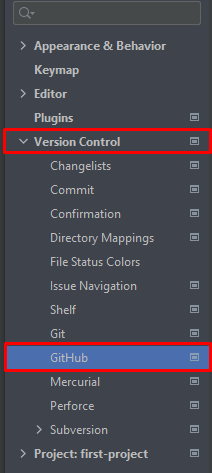 -
Click on the plus button at the top left of the menu and login to your GitHub account. 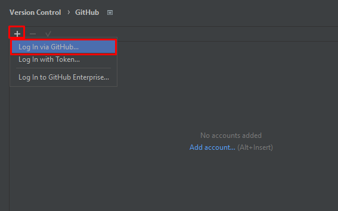
-
Click 'Ok' to apply your changes. 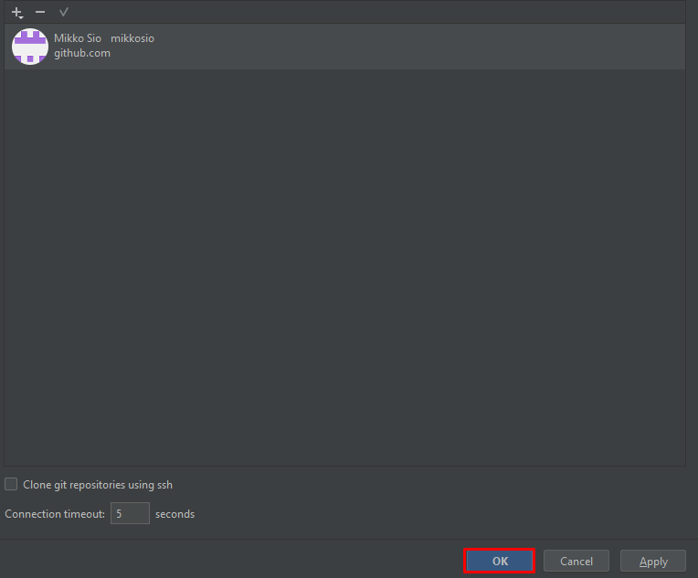
Success
You have successfully added your GitHub account to your PyCharm IDE. You can now make a repository for your project.
Creating a Repository¶
After adding your account to PyCharm, you now need to create a repository for your project. A repository is somewhat of a storage that contains all your files and history of your project. By creating a repository, you will be able to share your project to your GitHub account.
-
Click on 'VCS' and then 'Create Git Repository' 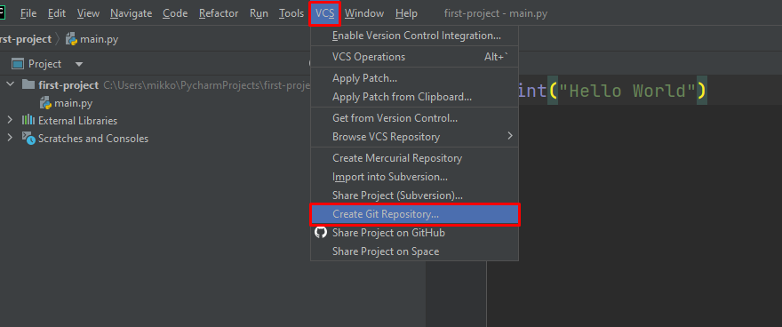
-
Click 'Ok' to finish creating your repository.
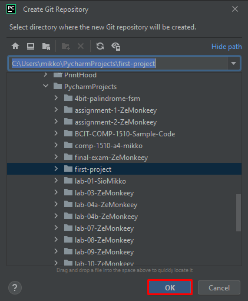
Success
You have successfully created a repository for your Python project.
Connecting Project to GitHub¶
Now that you have created a repository for your project, the only thing left to do is to share it to your GitHub account.
-
Navigate to 'GitHub' in the 'Git' dropdown and share your project on GitHub. 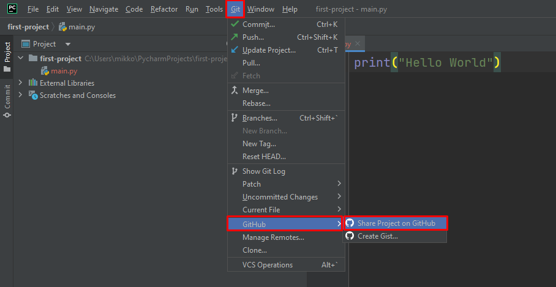
-
Click 'Share' to start sharing your project files to your GitHub.
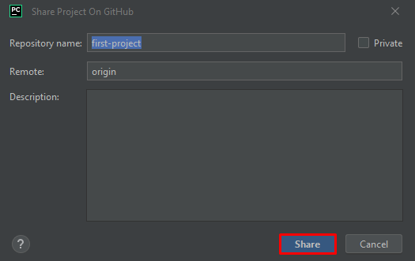 -
Click 'Add' to add your files to your GitHub repository.
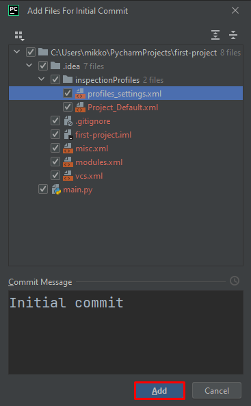
Success
Congratulations, you have successfully connected your project to GitHub. You can now view your repository in your GitHub account.
Info
Your git controls can be found in the top right of your window.
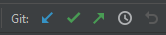
Blue Arrow: Allows you to pull any changes made in the repository and update your project.
Green Check Mark: Allows you to commit any changes you have made. This gets your changes ready to be pushed to the repository.
Green Arrow: Allows you to push your committed changes onto the repository.
Clock: Allows you to view all changes made to the repository.
Undo Arrow: Allows you to undo any changes you have added that is not in the repository.
Conclusion¶
Congratulations🎉, you have successfully learned how to connect your PyCharm project to you GitHub. You can now start coding with others.
Lessons learned:
- How to add your GitHub account to PyCharm.
- How to create a repository.
- How to connect your project to GitHub.
- Basics of git controls.
You have successfully completed all tasks. 
If you have any problems, you can check out the Troubleshooting page by clicking on the 'Next' button below me.